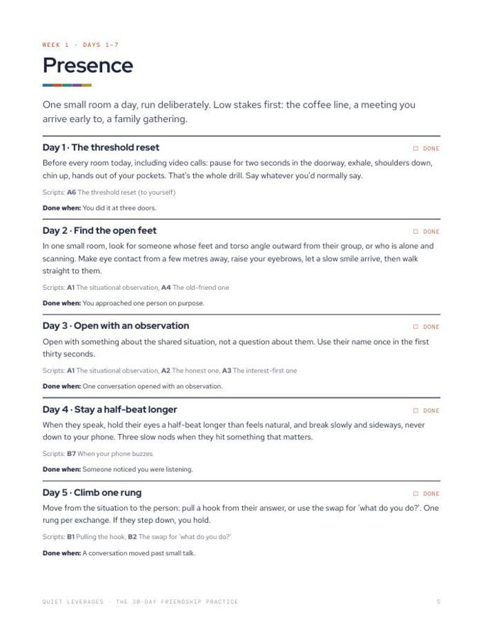
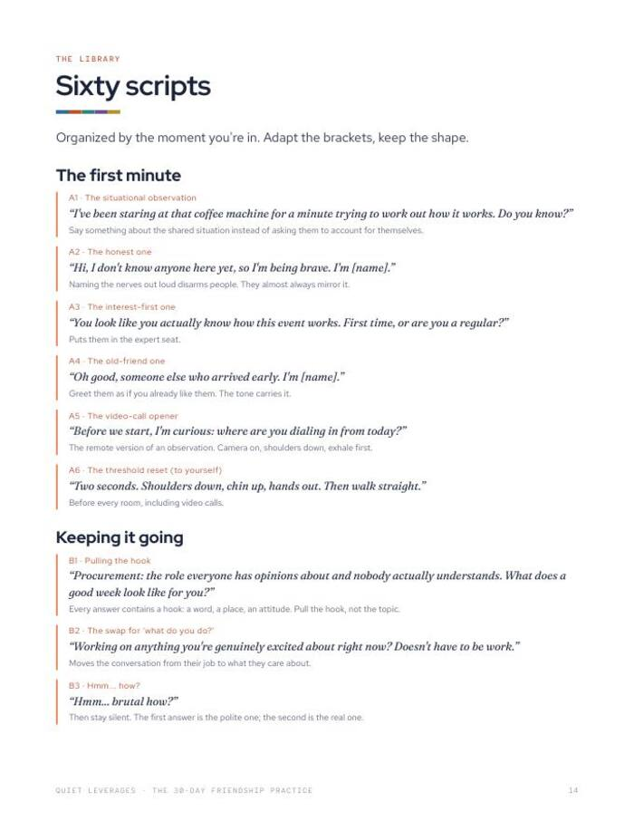
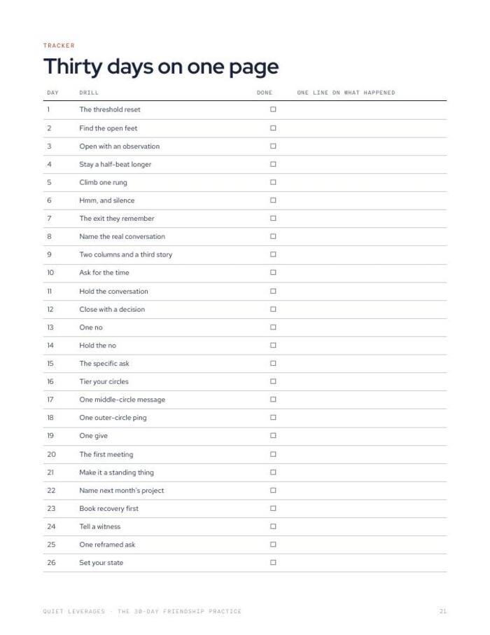

You keep saying 'we should get together sometime'. Thirty small drills turn it into standing plans.
One drill a day for thirty days, sixty scripts for the moments that matter, and a tracker so you can see what moved.
PDF guide + Google Sheet + Notion. Do Day 0 tonight, start Day 1 tomorrow.

One drill a day
Thirty daily drills across four weekly themes: presence, friction, friendship and energy.
Sixty scripts
Word-for-word lines, organised by the moment you are in. Adapt the brackets, keep the shape.
A tracker that shows what moved
A Day 0 baseline, a daily log and Sunday scores, so you can compare day 30 with day 0.
daily drills
ready-to-adapt scripts
Sunday scorecards
US searches for 'why is it hard to make friends as an adult' are up 550% on last year. Reading about it does nothing. The habits are physical, and they come from repetition in low-stakes rooms.
Google Trends, US, Jan-Sep 2026 vs 2025What changes after thirty days
Low stakes first
Week 1 starts in the coffee line and in a meeting you arrive early to. No party, no forced networking.
Words ready when you need them
Sixty scripts for the first minute, keeping a conversation going, asking for time, and the moments that are harder.
The hard conversation, end to end
Week 2 takes the conversation you have been avoiding from first sentence to close, plus one 'no', held.
Progress you can see
Four numbers on Day 0 and again on Day 30, with a Sunday score between. You will know what moved.
The guide, the tracker and the scripts
Everything is in the guide. The tracker and the Notion import are there if you would rather log it digitally.
- The guide (PDF). 30 daily drills, four Sunday scorecards, 60 scripts, AI rehearsal prompts.
- Tracker (Google Sheet). Day 0 baseline, daily log, Sunday scores, people in progress, all 60 scripts.
- Notion import. Pages and databases.
- Four weekly themes. Presence, friction, friendship, energy.



Ten minutes tonight, a few minutes a day
Day 0: measure
Write four numbers and one list before you change anything, so Day 30 has something to compare to.
Days 1 to 28: one drill a day
Each drill names the scripts to use and what counts as done. A Sunday score closes each week.
Days 29 and 30: compare
Twenty minutes with your Day 0 numbers and four weekly scores, then re-baseline and invite someone.
A good fit if you want a habit, not a pep talk
Use this if
- You say 'we should get together sometime' and nothing gets booked.
- You have done the Friendship Audit and want to close the gaps it showed.
- You can spare a few minutes a day for a month.
Skip it if
- You are looking for therapy or clinical support. This is a practice plan.
- You want to read about friendship. This is something you run, one day at a time.
- You want a single quick tool first. Start with the free Friendship Audit.
Why a month of repetition, in numbers
of time together to move from acquaintance to friend, and 200+ to a close friend.
Jeffrey Hall, University of Kansas, 2018of Americans have no close friends, up from 3% in 1990.
Survey Center on American Life, 2021of adults aged 30-44 are frequently or always lonely, the highest of any age group.
Harvard Making Caring Common, 2024What readers say about The 30-Day Friendship Practice
Start with Day 0 tonight
Low stakes first. One small move a day, for thirty days.
- The guide (PDF): 30 drills, 4 Sunday scorecards, 60 scripts
- Tracker as a Google Sheet
- Notion import
- Add a second kit for $12 at checkout
Before you decide
What format is it?
A PDF guide, a Google Sheet tracker and a Notion import. The guide has everything you need on its own, including the scripts and a one-page tracker.
How much time does it take each day?
Day 0 takes about ten minutes. After that, each daily drill is built to take about five minutes.
Who is it for?
Anyone who wants to make or keep friends as an adult and would rather run small drills than read about it. It starts in low-stakes rooms, so you do not need a social calendar to begin.
Do I need Notion or Google Sheets?
No. The PDF guide works on its own. The sheet and the Notion pages are for logging digitally.
Can I print it or use it on a tablet?
Both. Print the guide and tick off each day, or work from it on a tablet with any PDF app.
Is this therapy or mental-health advice?
No. It is a practice plan and general education only.
The next step after this one


Do Day 0 tonight. Start Day 1 tomorrow.
Thirty days, one small move at a time.
Get it for $19One-time $19 on Gumroad. Instant download.